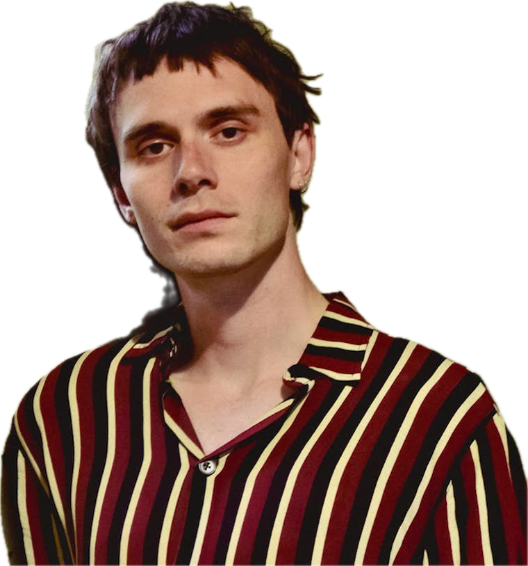
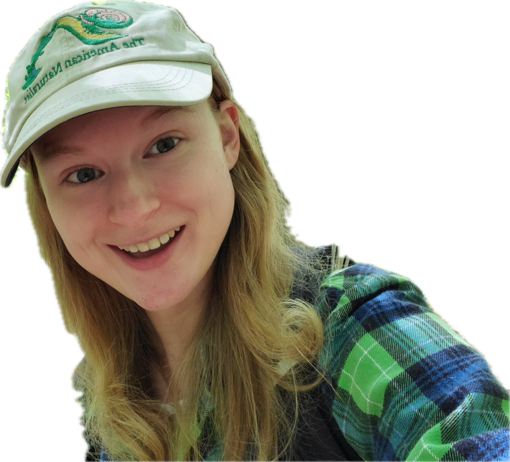

class: center, middle, inverse, title-slide .title[ # The American Naturalist ] .subtitle[ ## Beyond Microsoft: A Series of YouTube Shorts ] .author[ ### <img src = 'imgs/Subject6.png' width=160px height=140px/><br><img src = 'imgs/Subject4.png' alt='Rotated Image' class='rotate-image' width=45px height=50px/>        <img src = 'imgs/Subject2.png' alt='Rotated Image' class='rotate-image2' width=50px height=50px/><br>        <br>Dylan Padilla | 🔗 <a href="https://dylanpadilla.netlify.app/">https://dylanpadilla.netlify.app/</a><br>ASN Graduate Council | 🔗 <a href="https://asngrads.com/">https://asngrads.com/</a><br><svg viewBox="0 0 512 512" style="position:relative;display:inline-block;top:.1em;fill:gray;height:1em;" xmlns="http://www.w3.org/2000/svg"> <path d="M502.3 190.8c3.9-3.1 9.7-.2 9.7 4.7V400c0 26.5-21.5 48-48 48H48c-26.5 0-48-21.5-48-48V195.6c0-5 5.7-7.8 9.7-4.7 22.4 17.4 52.1 39.5 154.1 113.6 21.1 15.4 56.7 47.8 92.2 47.6 35.7.3 72-32.8 92.3-47.6 102-74.1 131.6-96.3 154-113.7zM256 320c23.2.4 56.6-29.2 73.4-41.4 132.7-96.3 142.8-104.7 173.4-128.7 5.8-4.5 9.2-11.5 9.2-18.9v-19c0-26.5-21.5-48-48-48H48C21.5 64 0 85.5 0 112v19c0 7.4 3.4 14.3 9.2 18.9 30.6 23.9 40.7 32.4 173.4 128.7 16.8 12.2 50.2 41.8 73.4 41.4z"></path></svg> <a href="mailto:dpadil10@asu.edu" class="email">dpadil10@asu.edu</a> ] --- ## ASN Graduate Council Mixer <center> <img src = 'imgs/mixer-albuquerque.png' width = 530 height = 400 /> <img src = 'imgs/booth.png' width = 490 height = 400 /> </center> The ASN Graduate Council is commited to developing initiatives to provide more valuable services to its student members ??? The Graduate Council actively participates in planning and assisting with these outreach efforts. Duties may include planning a graduate student activity at the annual meeting, assisting with developing a web-based community (blogs, discussion boards, and job services), planning science workshops aimed primarily at students that further the core goals of the Society (integration across the biological sciences)... --- ## A new way to connect with the public .pull-left[ <center> <img src = 'imgs/demonstration-short-edited.gif' width = 300 height = 520/> </center> ] .pull-right[ - Go to the App Store if you have an iOS device or to the Play Store if you have an Android - On the search bar, type 'YouTube' and download the App - Sign in using your email account and you'll be ready to go! ] ??? The idea is to provide a new way for the ASN Graduate Council to connect with all scientists using just a smartphone, tablet, or laptop through the YouTube app. --- ## A new way to connect with the public .pull-left[ <center> <img src = 'imgs/comment-edited.gif' width = 300 height = 520/> </center> ] .pull-right[ <br> - YouTube Shorts offers us the ability to interact with viewers by responding to comments with additional videos - With stickers through formats such as Q&As ] ??? The idea is to provide a new way for the ASN Graduate Council to connect with all scientists using just a smartphone, tablet, or laptop through the YouTube app. --- ## A new way to connect with the public .pull-left[ <center> <img src = 'imgs/comment-edited.gif' width = 300 height = 520/> </center> ] .pull-right[ <br> - YouTube Shorts offers us the ability to interact with viewers by responding to comments with additional videos - With stickers through formats such as Q&As - Expecting a moderate level of engagement with the public ] ??? The idea is to provide a new way for the ASN Graduate Council to connect with all scientists using just a smartphone, tablet, or laptop through the YouTube app. --- ## Beyond Microsoft .pull-left[ <center> <br> <img src = 'imgs/microsoft.png' width = 600 height = 380> </center> ] .pull-right[ <img src = 'imgs/typst_inset.png' width = 170 height = 220> ] Perform academic tasks researchers carry out on a daily basis --- ## Beyond Microsoft .pull-left[ <center> <br> <img src = 'imgs/microsoft.png' width = 600 height = 380> </center> ] .pull-right[ <img src = 'imgs/typst_inset.png' width = 170 height = 220> <img src = 'imgs/poster_photo.png' width = 170 height = 220> ] Perform academic tasks researchers carry out on a daily basis --- ## Beyond Microsoft .pull-left[ <center> <br> <img src = 'imgs/microsoft.png' width = 600 height = 380> </center> ] .pull-right[ <img src = 'imgs/typst_inset.png' width = 170 height = 220> <img src = 'imgs/poster_photo.png' width = 170 height = 220> <img src = 'imgs/ezgif.com-video-to-gif-converter.gif' width = 140 height = 220> ] Perform academic tasks researchers carry out on a daily basis --- ## Beyond Microsoft .pull-left[ <center> <br> <img src = 'imgs/microsoft.png' width = 600 height = 380> </center> ] .pull-right[ <img src = 'imgs/typst_inset.png' width = 170 height = 220> <img src = 'imgs/poster_photo.png' width = 170 height = 220> <img src = 'imgs/ezgif.com-video-to-gif-converter.gif' width = 140 height = 220> <img src = 'imgs/ezgif.com-crop.gif' width = 250 height = 150> ] Perform academic tasks researchers carry out on a daily basis --- ## Beyond Microsoft .pull-left[ <center> <br> <img src = 'imgs/tools.png' width = 500 height = 500> </center> ] .pull-right[ <center> <img src = 'imgs/html.png' width = 190, height = 200> </center> ] <br> Perform academic tasks researchers carry out on a daily basis --- ## Beyond Microsoft .pull-left[ <center> <br> <img src = 'imgs/tools.png' width = 500 height = 500> </center> ] .pull-right[ <center> <img src = 'imgs/html.png' width = 190 height = 200> <img src = 'imgs/css.png' width = 170 height = 175> </center> ] <br> Perform academic tasks researchers carry out on a daily basis --- ## Beyond Microsoft .pull-left[ <center> <br> <img src = 'imgs/tools.png' width = 500 height = 500> </center> ] .pull-right[ <center> <img src = 'imgs/html.png' width = 190 height = 200> <img src = 'imgs/css.png' width = 170 height = 175> <img src = 'imgs/typst.png' width = 150 height = 150> </center> ] <br> Perform academic tasks researchers carry out on a daily basis --- ## Beyond Microsoft .pull-left[ <center> <br> <img src = 'imgs/tools.png' width = 500 height = 500> </center> ] .pull-right[ <center> <img src = 'imgs/html.png' width = 190 height = 200> <img src = 'imgs/css.png' width = 170 height = 175> <img src = 'imgs/typst.png' width = 150 height = 150> <br><br><br> <img src = 'imgs/R.png' width = 170 height = 150> </center> ] --- ## Why YouTube? .pull-left[ <center> <img src = 'imgs/YouTube-page.png' width = 480 height = 520/> </center> ] --- ## Why YouTube? .pull-left[ <center> <img src = 'imgs/YouTube-page.png' width = 480 height = 520/> </center> ] .pull-right[ YouTube Shorts presents user-generated vertical or square videos up to 60 seconds long ] --- ## Why YouTube? .pull-left[ <center> <img src = 'imgs/YouTube-page.png' width = 480 height = 520/> </center> ] .pull-right[ YouTube Shorts presents user-generated vertical or square videos up to 60 seconds long <br><br> It allows users to add licensed music and on-screen captions ] --- ## Why YouTube? .pull-left[ <center> <img src = 'imgs/YouTube-page.png' width = 480 height = 520/> </center> ] .pull-right[ YouTube Shorts presents user-generated vertical or square videos up to 60 seconds long <br><br> It allows users to add licensed music and on-screen captions <br><br> Viewers can scroll through an endless feed of videos algorithmically tailored for the user ] --- ## Why YouTube? .pull-left[ <center> <img src = 'imgs/YouTube-page.png' width = 480 height = 520/> </center> ] .pull-right[ YouTube Shorts presents user-generated vertical or square videos up to 60 seconds long <br><br> It allows users to add licensed music and on-screen captions <br><br> Viewers can scroll through an endless feed of videos algorithmically tailored for the user <br><br> Although intended to be watched on smartphones, YouTube Shorts can be viewed on all other devices ] --- ## No Ad! <img src='https://gifdb.com/images/high/excited-shaquille-o-neal-3isxv4tbjeeb3fej.webp'/> --- ## This is what it looks like <center> <img src = 'imgs/trailer1.gif' width = 300 height = 520/> <img src = 'imgs/trailer2.gif' width = 300 height = 520/> <img src = 'imgs/trailer3.gif' width = 300 height = 520/> </center> --- ## Have freedom in your computing <center> <br> <img src = 'imgs/stallman.jpg' width = 600 height = 380> </center> Richard Stallman --- ## Here is what you should know and do <br> - We are going to release two videos weekly, one on Tuesdays and the other one on Thursdays, starting in August 2024 - Subscribe to the [American Society of Naturalists YouTube Channel](https://www.youtube.com/channel/UC8FDICm2TYLT-y1FB8gcQlA) at 🔗https://www.youtube.com/channel/UC8FDICm2TYLT-y1FB8gcQlA - Follow us on [X or Twitter ](https://x.com/asngrads) at 🔗https://x.com/asngrads Happy Computing!!! 💻